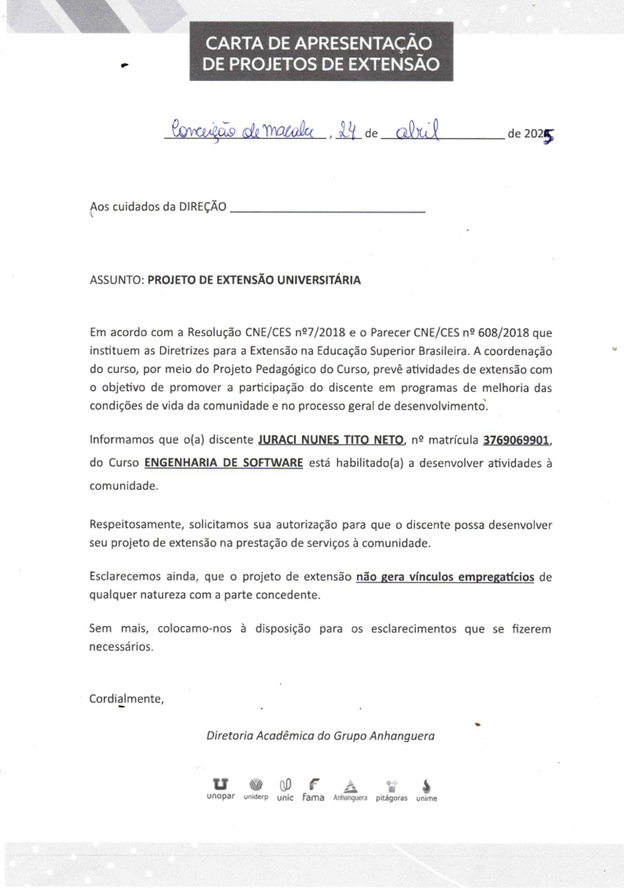

PROJETO SOCIAL DE PROGRAMAÇÃO WEB PARA ALUNOS DO ENSINO FUNDAMENTAL
Projeto de cunho social paanejado para ensinar conceitos básicos de programação web para os alunos da Escola Municipal Frei Valério em Conceição de macabu/RJ como parte da proposta pedagógica da disciplina de Projeto de Extensão do curso de Engenharia de Software.
A ação foi desenvolvida no formato de um workshop/aula com os alunos do
8° ano do ensino fundamental, da escola Frei Valério, em Conceição de
Macabu - RJ, durante as aulas de informática. A aula foi dividida em três
partes: A primeira parte, classificada como, parte conceitual, onde foi
apresentado de forma simples os conceitos da área FRONTEND, alguns
elementos de banco de dados e compiladores além da apresentação de
eventos e personalidades históricas relevantes na área da programação. Na
segunda fase, houve a apresentação da proposta da prática para os alunos:
Sendo a mesma, a construção de uma página HTML simples personalizada.
Na terceira fase, os alunos implementaram seu código com elementos de
CSS, estilizando à sua maneira e foram apresentados, de forma introdutória,
aos conceitos da linguagem Javascript.
1. Pontos Fortes do Projeto
Impacto Social e Educacional:O projeto atacou diretamente a negligência da educação tecnológica na rede pública, promovendo inclusão digital para alunos do 8º ano do ensino fundamental.
Aplicação Prática da Teoria:Demonstrou-se com o projeto uma capacidade de transpor conceitos complexos de Engenharia de Software (como compiladores e bancos de dados) para uma linguagem acessível e prática.
Adaptabilidade:Com a iminência de imprevistos foi necessário alterar a estratégia inicial (de introdução à ciência da computação para a criação de um site) ao perceber o que geraria maior engajamento dos alunos, demonstrando flexibilidade e foco no usuário
Reconhecimento Institucional:O projeto foi validado positivamente pela gestão da Escola Municipal Frei Valério e pelo professor de informática, destacando o sucesso da iniciativa na formação intelectual dos estudantes.
2. Ferramentas e Tecnologias Utilizadas
* Linguagens de Frontend: HTML5, CSS3 e introdução ao JavaScript.
* Linguagens de Backend (Conceitual): Apresentação de PHP e Python.
* Planejamento e Gestão: Organização de um workshop dividido em etapas (Conceitual, Proposta e Implementação).
* Ética e Responsabilidade Social: Atuação alinhada aos Objetivos de Desenvolvimento Sustentável da ONU (ODS 4 - Educação de Qualidade).
4. Importância para o seu Portfólio
Liderança e Iniciativa:Mostra que você é um profissional proativo que não apenas domina o código, mas busca transformar a realidade ao seu redor através da tecnologia.
Visão Humanista da Engenharia:Comprova sua capacidade de compreender diferentes realidades sociais e culturais, uma competência valorizada em UX Design e gestão de produtos.
Experiência de Mentoria:Atuar como "instrutor" reforça sua senioridade técnica, pois ensinar exige um domínio profundo do conteúdo para simplificá-lo.
Alinhamento com Padrões de Mercado:O projeto reflete o uso de metodologias de ensino modernas e foco no perfil de egresso criativo e atualizado.
